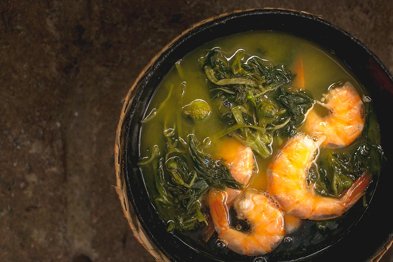

Tacacá is the most popular dish of the North provided by Bruna Brandão
Brazil
Brazil is the largest country in South America. Like several other South American countries, their food along with the cooking practices and traditions came from indigenous groups that then meshed with other cultures over the years. It began with the Guarani, Tupi, and Arawak groups before slaves were brought over from Portugal and Africa. Later on, the German, Italian, and other groups made it to the country as well. Each culture brought something unique to the table and today you can find pieces of it in dishes across the country. This truly makes Brazil's dishes so unique.
Brazil is split up into five geographical regions with a distinct cuisine in each. The North region has remained relatively unchanged when compared to the rest. It adopted the native inhabitants practices at the beginning, and because of its remote location, it hasn't had much influence from the other settlers that came to Brazil. In the North region, because it is in the Amazon Rain Forest, you can find a lot of fruit paired with fish and other seafood with one of the most popular dishes being the tacacá. This is a hot soup made of cassava, shrimp, tapioca, and native herbs.
In contrast, in the Northeast region of Brazil, there were many Portugese and African slaves. They brought their flavors and practices over like the heavy use of palm oil and coconut milk along with the tropical fruits and seafood that are found in the region. They often eat a stew called moqueca baiana which is made of fish or shrimp, palm oil, coconut milk, tomatoes, onions, and peppers that is often served with rice. In the Central-West region, one can find the indigenous, Portugese, and African influence. This region is full of savannas and wetlands which provides different ingredients like beef, fish, a fruit called pequi, and grains like rice. With these ingredients, they make a popular dish called arroz com pequi.
The other two regions are the South and the Southeast. The Southern region has been heavily influenced by European immigrants. Today it is well known for the gauchos which are the cowboys in Brazil. Because of the gaucho culture, they enjoy a lot of meats, dairy, corn, wheat, and vegetables. Brazil is well-known for their churrasco which is like Brazilian barbecue that comes from this region. The South-Eastern region differs from the Southern in that it has a rich blend of Portugese, African, and indigenous influence. It is the most populated region in the country and some of the most popular dishes come from it. They eat a lot of beans, rice, pork, sausage, cassava, and cheese. The national dish of Brazil, the feijoada, is from here. It is a dish made up of a black bean stew with beef, pork, onions, and other ingredients served on rice.
To find more information about each of the five regions, take a look at this link here!
Feijoada
Amount
Ingredient
2 lbs
black beans
1 lb
dried beef
4
bay leaves
1/2 lb
smoked pork ribs
2
unsalted pigs tails
3/4 lb
bacon
1
unsalted pigs ear
1/4 lb
pork belly
2
unsalted pigs feet
1
smoked sausage
1 lb
spicy sausage
2
large onions
4 cloves
garlic (minced)
2 tbsp
oil
2
bunches parsley
1 tsp
salt and pepper
It is common to follow the meal with some sort of beverage to help with the digestion of it. A strong black coffee is what one can find in many households, but that is not the only option. Many others will drink herbal teas like fennel or mint teas. It is believed that they aid with the digestion, but it is also part of a cultural tradition.